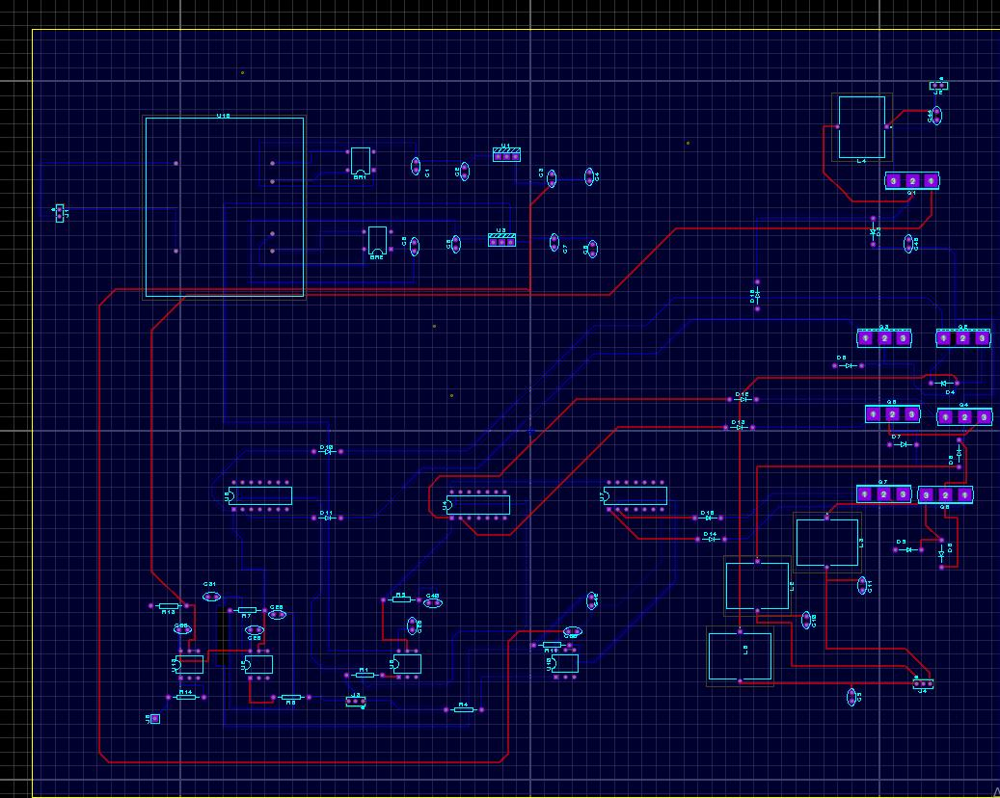
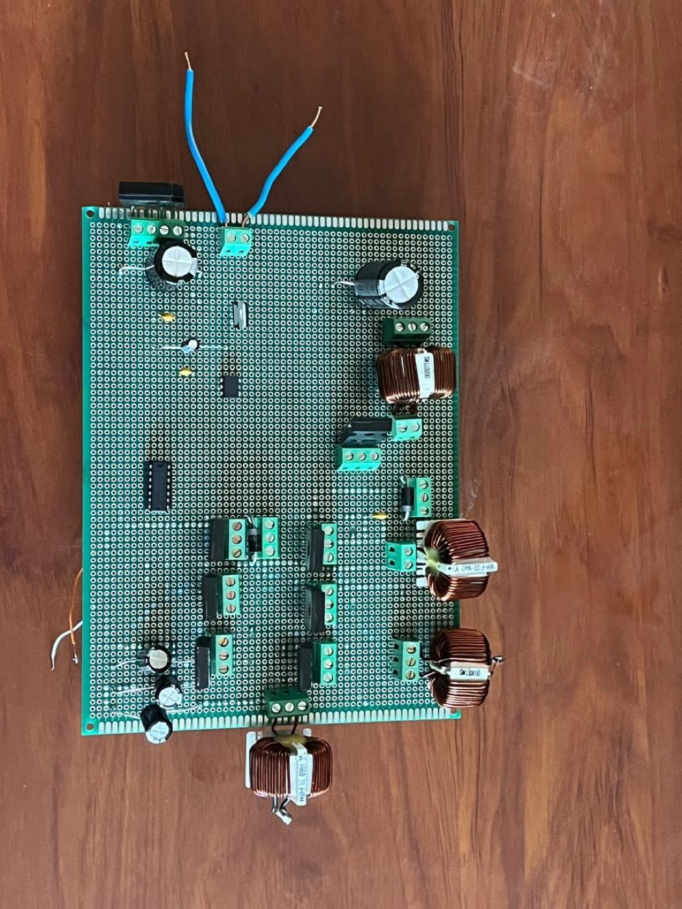
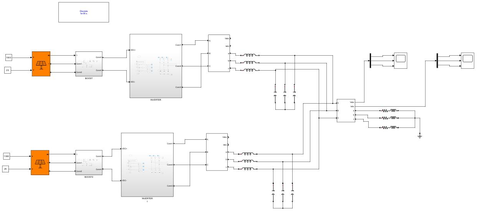
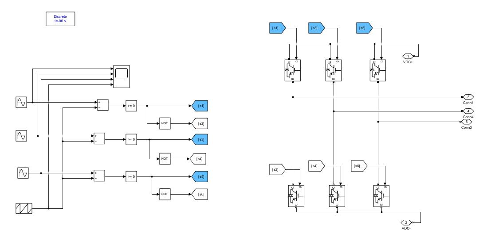
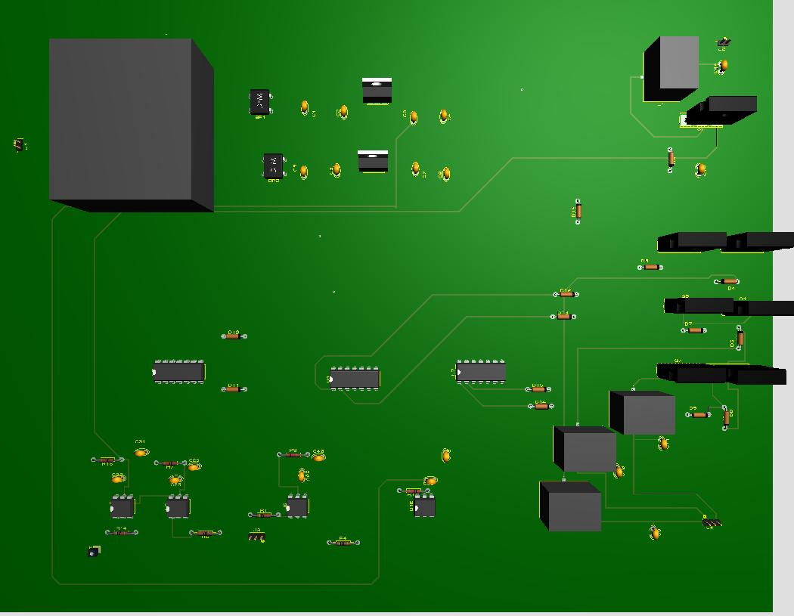

01
Routing in Proteus
Two copper layers, red on top and blue underneath, with the wide traces of the power path kept short.
- Proteus
- Two layers
- Power routing

Case study 02 · Feb — Jun 2025
Two three‑phase inverters, each fed by its own PV array and Boost‑MPPT stage, sharing one load. Modelled in MATLAB/Simulink, driven in real time from a dSPACE DS1104, and built on a board I laid out in Proteus.

Each branch is a complete PV chain: array, Boost with perturb‑and‑observe MPPT, three‑phase inverter and LC filter. Both inverters feed the same three‑phase R‑L load.

Each leg compares its sine reference with one shared triangle carrier. Where the sine is higher, the upper IGBT conducts, and a NOT gate drives the lower one. That is the SPWM block of my model. Change the modulation and watch the pulses.
Lower m, narrower pulses, smaller output voltage.
More carrier periods per sine: more pulses, cleaner current, more switching losses.
In the linear range (m ≤ 1) the peak line‑to‑line fundamental is √3/2 · m · Vdc, shown here as a fraction of the DC‑link voltage. The waveforms are computed live from the same comparison the Simulink block makes.

The control part of the model runs on a dSPACE DS1104 board, which turns it into real PWM signals for the inverter while the circuit is running.
PV arrays, Boost, MPPT and SPWM, all in MATLAB/Simulink.
The control blocks are compiled for the DS1104 straight from the model.
The board executes the control in real time and outputs the gate signals.
Signals are monitored and adjusted on the PC while the hardware runs.
It was also the first time I worked with a board as powerful as the dSPACE DS1104, and its advantages are genuinely impressive.
The hardware was the part I knew least: choosing the components, laying out the board in Proteus, then building it.
01
Two copper layers, red on top and blue underneath, with the wide traces of the power path kept short.

02
The 3D view catches what a 2D layout hides: tall inductors, terminal blocks at the edge, room to solder.

03
Transistor legs with their terminals, four toroidal filter inductors and the electrolytic capacitors, ready for the DS1104.
This project taught me a lot I did not master before, above all on the hardware side, and deepened what I know about renewable energy and power electronics.
Skills